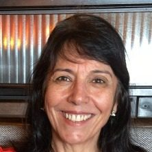
Coordenadora
Rosana Sueli da Motta Jafelice
Biomatemática, modelagem e inteligência computacional
O REME reúne docentes e pesquisadores de matemática, estatística, computação e engenharia da Universidade Federal de Uberlândia. Estudantes de graduação e de pós-graduação participam dos projetos e das oficinas.

Coordenadora
Biomatemática, modelagem e inteligência computacional
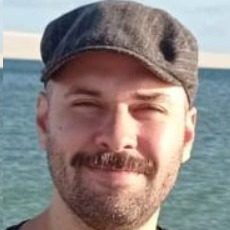
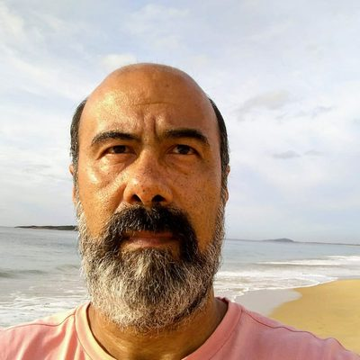
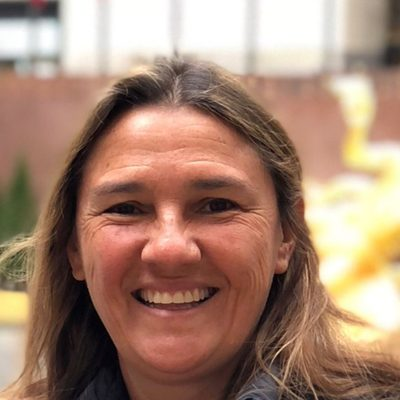
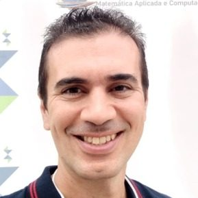
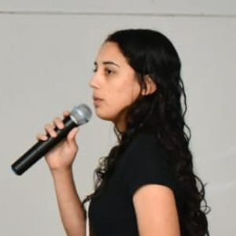
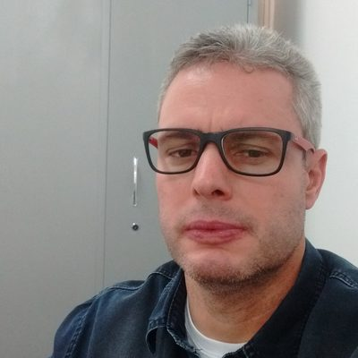
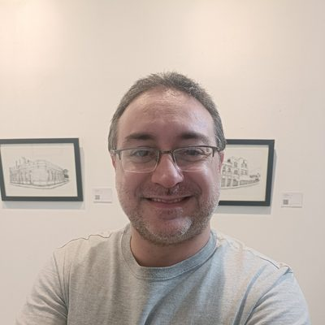
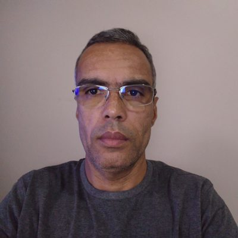
Análise estatística, inferência bayesiana e ciência de dados
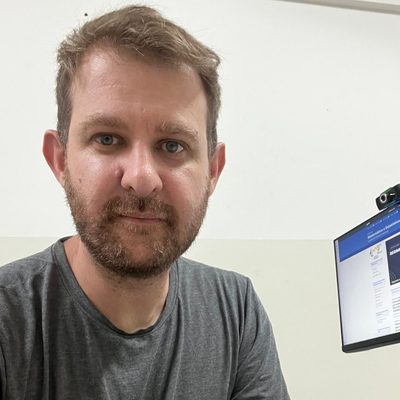
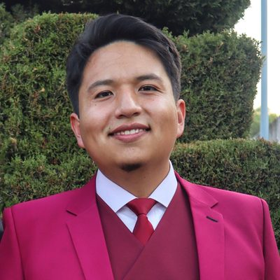
Modelagem estatística de mercado e empresas, estatística multivariada e controle de qualidade
Matemática aplicada
Acústica, controle de ruído, manutenção preditiva e projeto de máquinas
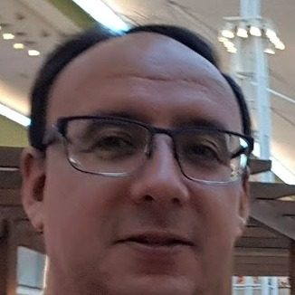
Docentes e estudantes da UFU interessados em trabalhar com problemas de empresas podem escrever para a coordenação.